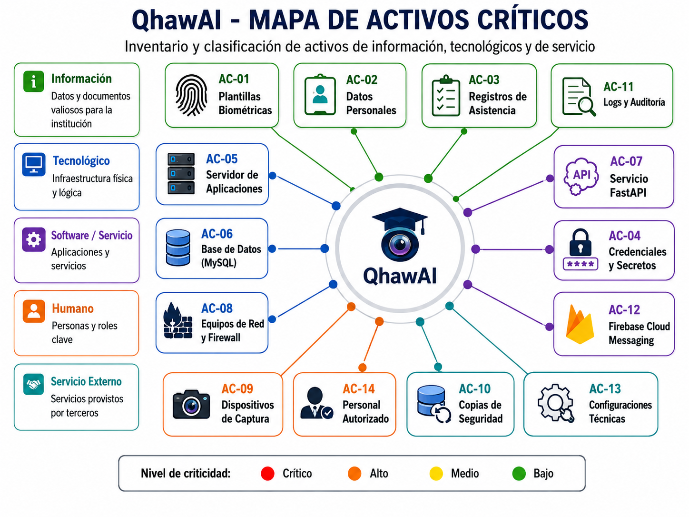
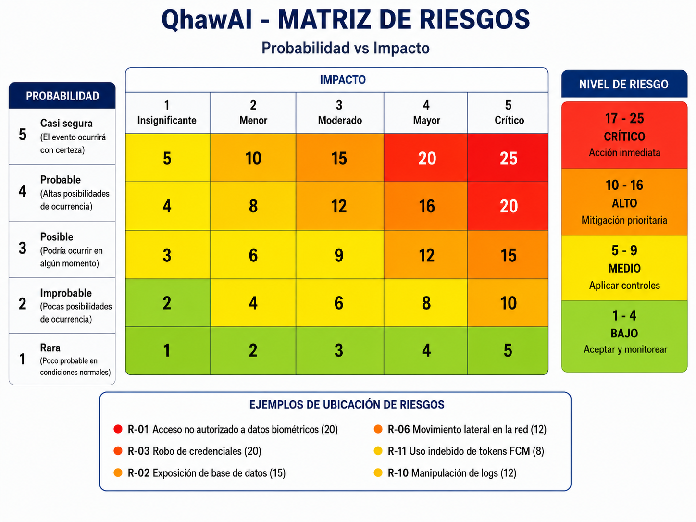
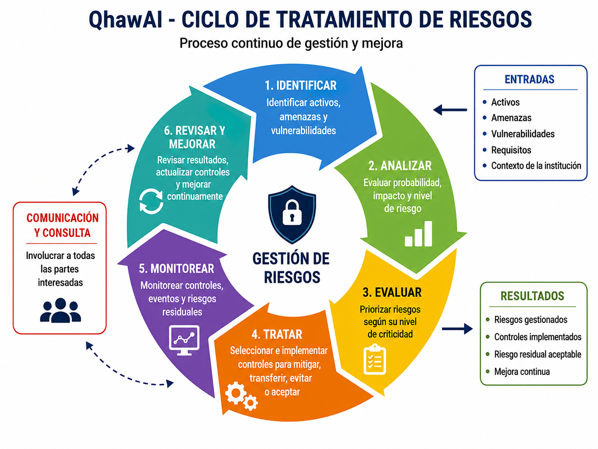
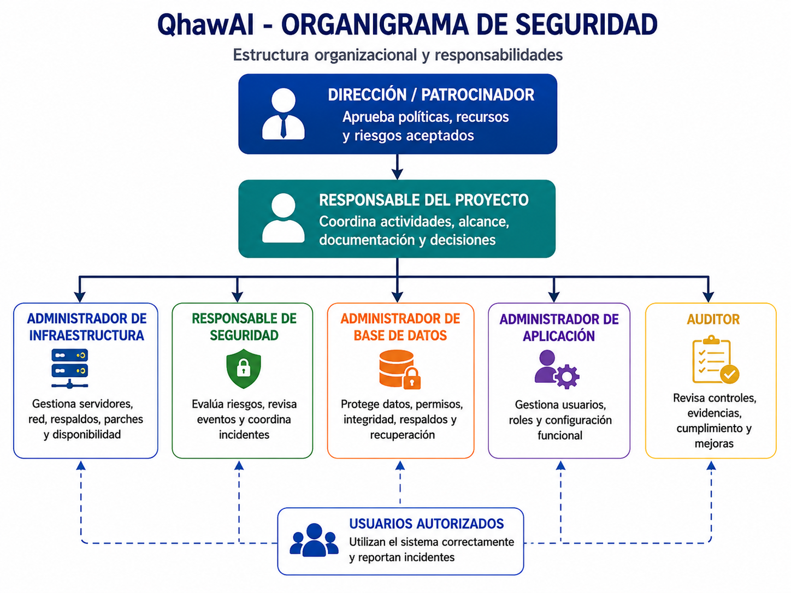

Entregable 2 — Planificación de Seguridad
Identificación de activos críticos, análisis y tratamiento de riesgos, definición de políticas de seguridad y asignación de roles para la infraestructura tecnológica de QhawAI.
Resumen Ejecutivo
El presente documento desarrolla la planificación de seguridad para la infraestructura tecnológica que soporta QhawAI, sistema inteligente de control de asistencia mediante reconocimiento facial orientado a una institución educativa.
Debido a que la solución procesa datos personales, registros de asistencia y plantillas biométricas, resulta necesario identificar los activos críticos, analizar las amenazas y vulnerabilidades, establecer controles y definir claramente las responsabilidades de cada participante.
El análisis de riesgos utiliza una metodología cualitativa y semicuantitativa basada en probabilidad e impacto. El nivel de riesgo se obtiene multiplicando ambos valores y clasificándolo como bajo, medio, alto o crítico.
La planificación incluye políticas de acceso, protección de datos, cifrado, respaldos, actualización, monitoreo, continuidad y respuesta ante incidentes. También incorpora principios éticos de la ACM, especialmente privacidad, confidencialidad, transparencia y prevención de daños.
1. Introducción
La seguridad de la información constituye un requisito esencial para QhawAI debido al tratamiento de información personal, biométrica y académica. Una falla en la infraestructura podría afectar la confidencialidad, integridad, disponibilidad y trazabilidad de los registros.
La planificación presentada permite anticipar riesgos, priorizar controles y establecer responsabilidades antes de ejecutar la implementación técnica.
2. Objetivos de la Planificación de Seguridad
2.1 Objetivo general
Planificar la seguridad de la infraestructura tecnológica de QhawAI mediante la identificación de activos críticos, el análisis de riesgos, la definición de políticas y la asignación de responsabilidades.
2.2 Objetivos específicos
3. Alcance de Seguridad
La planificación comprende los componentes tecnológicos, servicios, información y personas relacionadas con la operación de QhawAI.
4. Metodología de Evaluación
La evaluación se estructura siguiendo principios de gestión de riesgos utilizados en ISO/IEC 27005 y NIST. Cada riesgo se analiza considerando activo, amenaza, vulnerabilidad, probabilidad, impacto, nivel inherente, tratamiento y riesgo residual.
4.1 Escala de probabilidad
| Valor | Nivel | Descripción |
|---|---|---|
| 1 | Rara | El evento es poco probable en condiciones normales. |
| 2 | Improbable | Puede ocurrir, pero existen controles preventivos. |
| 3 | Posible | El evento podría presentarse ocasionalmente. |
| 4 | Probable | Existen condiciones que favorecen su ocurrencia. |
| 5 | Casi segura | Se espera que ocurra si no se aplican controles. |
4.2 Escala de impacto
| Valor | Nivel | Consecuencia |
|---|---|---|
| 1 | Insignificante | Sin interrupción relevante ni pérdida de información. |
| 2 | Menor | Afectación limitada y recuperación sencilla. |
| 3 | Moderado | Interrupción temporal o afectación controlable. |
| 4 | Mayor | Pérdida relevante, indisponibilidad o incidente serio. |
| 5 | Crítico | Exposición biométrica, pérdida significativa o interrupción prolongada. |
4.3 Cálculo del riesgo
Nivel de riesgo = Probabilidad × Impacto
| Resultado | Nivel | Tratamiento requerido |
|---|---|---|
| 1–4 | Bajo | Aceptar y monitorear. |
| 5–9 | Medio | Aplicar controles programados. |
| 10–16 | Alto | Mitigación prioritaria. |
| 17–25 | Crítico | Acción inmediata, evitar o reducir. |
5. Identificación de Activos Críticos
Los activos se valoran considerando confidencialidad, integridad y disponibilidad. Cada dimensión utiliza una escala de 1 a 5.

| ID | Activo | Tipo | Propietario | C | I | D | Criticidad |
|---|---|---|---|---|---|---|---|
| AC-01 | Plantillas biométricas | Información | Responsable del sistema | 5 | 5 | 4 | Crítica |
| AC-02 | Datos personales | Información | Institución educativa | 5 | 5 | 3 | Crítica |
| AC-03 | Registros de asistencia | Información | Administración | 4 | 5 | 4 | Alta |
| AC-04 | Credenciales y secretos | Información | Administrador TI | 5 | 5 | 4 | Crítica |
| AC-05 | Servidor de aplicaciones | Tecnológico | Administrador TI | 4 | 5 | 5 | Crítica |
| AC-06 | Base de datos MySQL | Tecnológico | Administrador de BD | 5 | 5 | 5 | Crítica |
| AC-07 | Servicio FastAPI | Software | Responsable técnico | 4 | 5 | 5 | Crítica |
| AC-08 | Equipos de red y firewall | Tecnológico | Administrador de red | 4 | 5 | 5 | Crítica |
| AC-09 | Dispositivos de captura | Tecnológico | Responsable del sistema | 4 | 4 | 4 | Alta |
| AC-10 | Copias de seguridad | Información | Administrador TI | 5 | 5 | 5 | Crítica |
| AC-11 | Logs y registros de auditoría | Información | Responsable de seguridad | 4 | 5 | 4 | Alta |
| AC-12 | Firebase Cloud Messaging | Servicio externo | Responsable de aplicación | 3 | 4 | 4 | Alta |
| AC-13 | Configuraciones técnicas | Información | Administrador TI | 4 | 5 | 4 | Alta |
| AC-14 | Personal autorizado | Humano | Institución educativa | 4 | 5 | 4 | Alta |
6. Análisis de Riesgos

| ID | Activo | Amenaza | Vulnerabilidad | P | I | Riesgo | Nivel |
|---|---|---|---|---|---|---|---|
| R-01 | Datos biométricos | Acceso no autorizado | Permisos excesivos o credenciales comprometidas | 4 | 5 | 20 | Crítico |
| R-02 | Base de datos | Exposición externa | Puerto o servicio publicado incorrectamente | 3 | 5 | 15 | Alto |
| R-03 | Credenciales | Robo de cuenta | Contraseña débil o ausencia de MFA | 4 | 5 | 20 | Crítico |
| R-04 | Servidor | Malware o ransomware | Parches pendientes o privilegios excesivos | 3 | 5 | 15 | Alto |
| R-05 | Copias de seguridad | Pérdida de información | Backups no probados o almacenados en un solo medio | 4 | 5 | 20 | Crítico |
| R-06 | Red institucional | Movimiento lateral | Ausencia de segmentación o ACL | 3 | 4 | 12 | Alto |
| R-07 | FastAPI | Denegación de servicio | Ausencia de límites y control de solicitudes | 3 | 4 | 12 | Alto |
| R-08 | Dispositivo biométrico | Suplantación con fotografía | Ausencia de mecanismo anti-spoofing | 3 | 4 | 12 | Alto |
| R-09 | Servidor principal | Falla del servicio | Punto único de fallo | 3 | 5 | 15 | Alto |
| R-10 | Logs | Manipulación o eliminación | Registros almacenados únicamente en el equipo origen | 3 | 4 | 12 | Alto |
| R-11 | Firebase FCM | Uso indebido de tokens | Protección inadecuada de claves o tokens | 2 | 4 | 8 | Medio |
| R-12 | Configuraciones | Error humano | Cambios sin revisión ni respaldo | 4 | 4 | 16 | Alto |
7. Plan de Tratamiento de Riesgos

| Riesgo | Tratamiento | Control propuesto | Responsable | Residual esperado |
|---|---|---|---|---|
| R-01 | Mitigar | RBAC, cifrado, auditoría y acceso mínimo necesario. | Seguridad / Administrador TI | Medio |
| R-02 | Evitar | MySQL restringido a red interna y reglas de firewall. | Administrador de red | Bajo |
| R-03 | Mitigar | MFA, contraseñas robustas, bloqueo y revisión de accesos. | Responsable de seguridad | Medio |
| R-04 | Mitigar | Gestión de parches, mínimo privilegio y protección del host. | Administrador TI | Medio |
| R-05 | Mitigar | Estrategia 3-2-1, cifrado y pruebas de restauración. | Administrador TI | Medio |
| R-06 | Mitigar | VLAN, ACL, firewall y principio de denegación predeterminada. | Administrador de red | Bajo |
| R-07 | Mitigar | Rate limiting, monitoreo y límites de recursos. | Responsable técnico | Medio |
| R-08 | Mitigar | Validación de vida, revisión humana y mecanismo alternativo. | Responsable del sistema | Medio |
| R-09 | Mitigar | Backup, virtualización y procedimiento de recuperación. | Administrador TI | Medio |
| R-10 | Mitigar | Logs centralizados, acceso restringido y retención. | Responsable de seguridad | Bajo |
8. Políticas de Seguridad
8.1 Política de control de acceso
Todo acceso deberá realizarse mediante una cuenta individual, autorizada y relacionada con las funciones del usuario. Se aplicará control de acceso basado en roles y mínimo privilegio.
Revisión: trimestral o ante cambio de funciones.
8.2 Política de contraseñas y autenticación
Las cuentas privilegiadas deberán utilizar contraseñas robustas, autenticación multifactor cuando sea viable, bloqueo por intentos fallidos y renovación ante sospecha de compromiso.
8.3 Política de protección de datos biométricos
Los datos biométricos serán utilizados únicamente para la finalidad informada. Se minimizará el almacenamiento de fotografías originales y se protegerán las plantillas biométricas mediante cifrado, control de acceso y trazabilidad.
8.4 Política de cifrado
Las comunicaciones externas deberán emplear HTTPS y TLS. Los respaldos, credenciales y datos sensibles deberán protegerse mediante mecanismos criptográficos adecuados.
8.5 Política de copias de seguridad
Se aplicará una estrategia de respaldo con varias copias, medios diferentes y al menos una copia externa o aislada. Toda política de backup deberá incluir pruebas de restauración.
8.6 Política de actualizaciones y parches
Los sistemas operativos, aplicaciones, dependencias, contenedores y dispositivos deberán mantenerse actualizados mediante un procedimiento controlado, probado y documentado.
8.7 Política de monitoreo y registros
Los activos críticos deberán generar logs de acceso, cambios, errores, eventos de seguridad y operación. Los registros deberán conservar fecha, hora, origen y responsable.
8.8 Política de incidentes
Todo incidente deberá ser identificado, reportado, contenido, analizado y documentado. La recuperación deberá finalizar con acciones correctivas y lecciones aprendidas.
8.9 Política de servicios externos y Firebase FCM
Las claves, tokens y credenciales de Firebase Cloud Messaging deberán permanecer fuera del código fuente. El servicio se utilizará únicamente para notificaciones autorizadas.
8.10 Política de retención y eliminación
La información se conservará únicamente durante el periodo necesario. La eliminación deberá ser segura, autorizada y verificable.
9. Roles y Responsabilidades

| Rol | Responsabilidades |
|---|---|
| Dirección o patrocinador | Aprobar políticas, prioridades, recursos y riesgos aceptados. |
| Responsable del proyecto | Coordinar actividades, alcance, documentación y decisiones. |
| Administrador de infraestructura | Gestionar servidores, red, respaldos, parches y disponibilidad. |
| Responsable de seguridad | Evaluar riesgos, revisar eventos y coordinar incidentes. |
| Administrador de base de datos | Proteger datos, permisos, integridad, respaldos y recuperación. |
| Administrador de aplicación | Gestionar usuarios, roles y configuración funcional. |
| Auditor | Revisar controles, evidencias, cumplimiento y mejoras. |
| Usuario autorizado | Utilizar el sistema correctamente y reportar incidentes. |
10. Matriz RACI
R = Responsable de ejecutar, A = autoridad que aprueba, C = consultado e I = informado.
| Actividad | Dirección | Proyecto | Infraestructura | Seguridad | BD | Auditor |
|---|---|---|---|---|---|---|
| Aprobar políticas | A | R | C | C | I | I |
| Identificar activos | I | A | R | R | C | C |
| Evaluar riesgos | I | A | C | R | C | C |
| Configurar red y firewall | I | C | R | A/C | I | I |
| Gestionar accesos | A | C | R | R | C | I |
| Ejecutar respaldos | I | C | R | C | R | I |
| Gestionar incidentes | I | C | R | A/R | C | I |
| Auditar controles | A | C | I | C | I | R |
| Aceptar riesgo residual | A | R | C | C | I | I |
11. Ética ACM y Tratamiento Responsable
La planificación de seguridad incorpora principios de responsabilidad profesional, privacidad, confidencialidad y prevención de daños.
12. Revisión y Mejora
| Elemento | Frecuencia | Responsable | Evidencia |
|---|---|---|---|
| Inventario de activos | Semestral | Infraestructura | Inventario actualizado |
| Matriz de riesgos | Semestral o ante cambios | Seguridad | Matriz aprobada |
| Usuarios y privilegios | Trimestral | Seguridad / Administrador | Reporte de accesos |
| Políticas de seguridad | Anual | Dirección y seguridad | Versión aprobada |
| Backups y restauración | Mensual | Infraestructura / BD | Acta de prueba |
13. Conclusiones
La planificación identifica como activos de mayor criticidad las plantillas biométricas, la base de datos, las credenciales, los respaldos, el servidor y los dispositivos de red.
Los riesgos prioritarios están relacionados con accesos no autorizados, pérdida de datos, exposición de servicios, credenciales comprometidas, malware, fallos del servidor y errores de configuración.
Las políticas y la matriz RACI permiten establecer controles aplicables y responsables definidos. Su eficacia deberá ser demostrada posteriormente durante la implementación, el monitoreo y las pruebas de seguridad.
14. Referencias y Marcos Utilizados
| Marco o estándar | Aplicación |
|---|---|
| ISO/IEC 27001 | Gestión y controles de seguridad de la información. |
| ISO/IEC 27002 | Buenas prácticas y controles de seguridad. |
| ISO/IEC 27005 | Identificación, evaluación y tratamiento de riesgos. |
| NIST | Gestión de riesgos, controles y mejora continua. |
| Código de Ética ACM | Privacidad, confidencialidad y prevención de daños. |
15. Anexos
| Anexo | Descripción | Archivo | Estado |
|---|---|---|---|
| Anexo A | Mapa de activos críticos | e2-mapa-activos-qhawai.png | Pendiente de generar |
| Anexo B | Matriz visual de riesgos | e2-matriz-riesgos-qhawai.png | Pendiente de generar |
| Anexo C | Organigrama de seguridad | e2-organigrama-seguridad-qhawai.png | Pendiente de generar |
| Anexo D | Ciclo de tratamiento de riesgos | e2-ciclo-tratamiento-riesgos-qhawai.png | Pendiente de generar |
| Anexo E | Matriz completa de riesgos | Incluida en el entregable | Desarrollada |
| Anexo F | Matriz RACI | Incluida en el entregable | Desarrollada |
Verificación de la Rúbrica CE0321
| Criterio | Evidencia desarrollada | Estado |
|---|---|---|
| Identificación de activos críticos | Inventario clasificado, propietario, valoración CIA y criticidad. | Desarrollado |
| Análisis de riesgos | Amenaza, vulnerabilidad, probabilidad, impacto, cálculo, control y residual. | Desarrollado |
| Políticas de seguridad | Diez políticas aplicables al contexto de QhawAI. | Desarrollado |
| Roles y responsabilidades | Organigrama, definición de roles y matriz RACI. | Desarrollado |
| Calidad documental y ética | Estructura profesional, referencias y principios ACM. | Desarrollado |